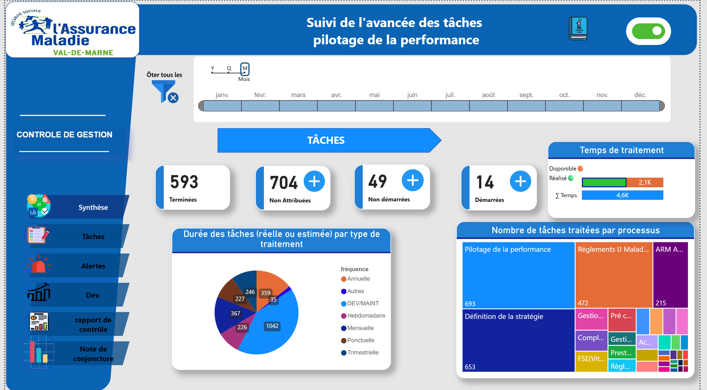
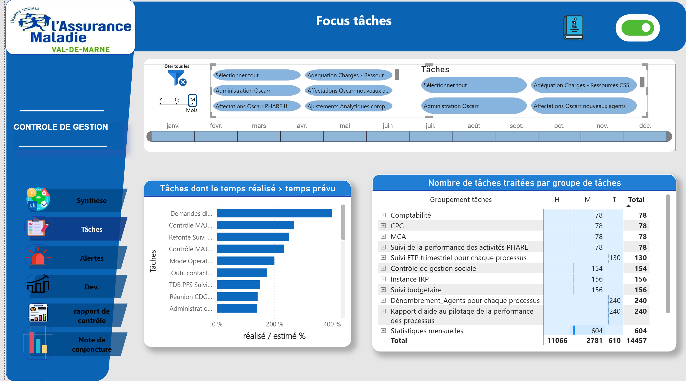
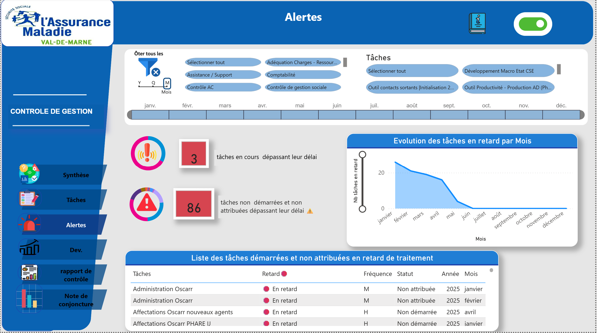
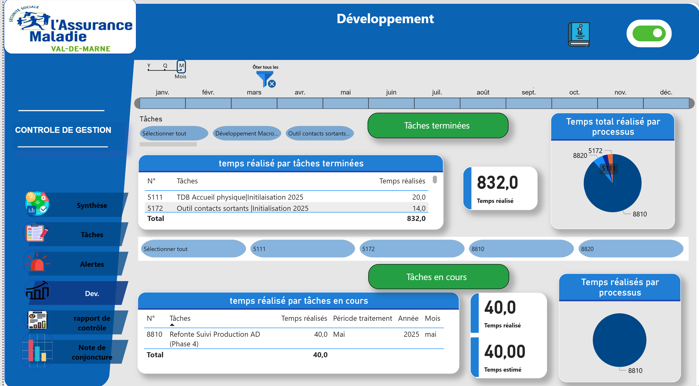
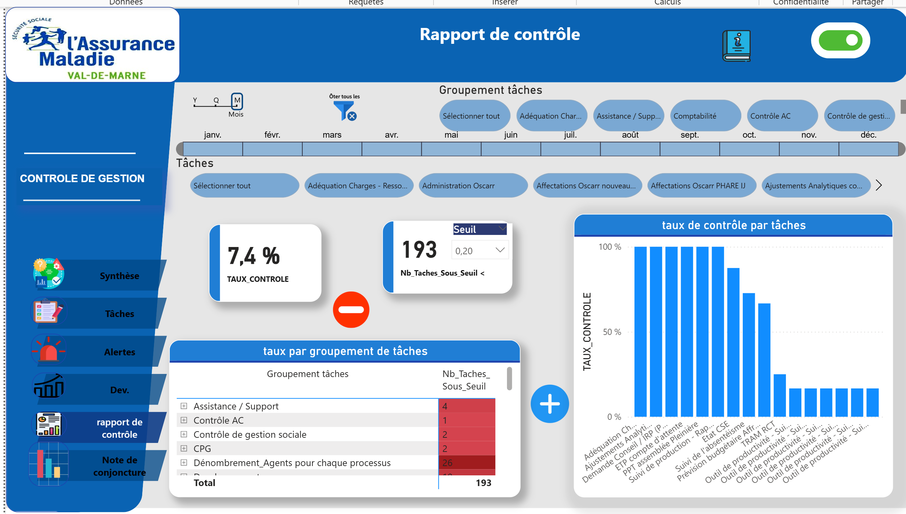
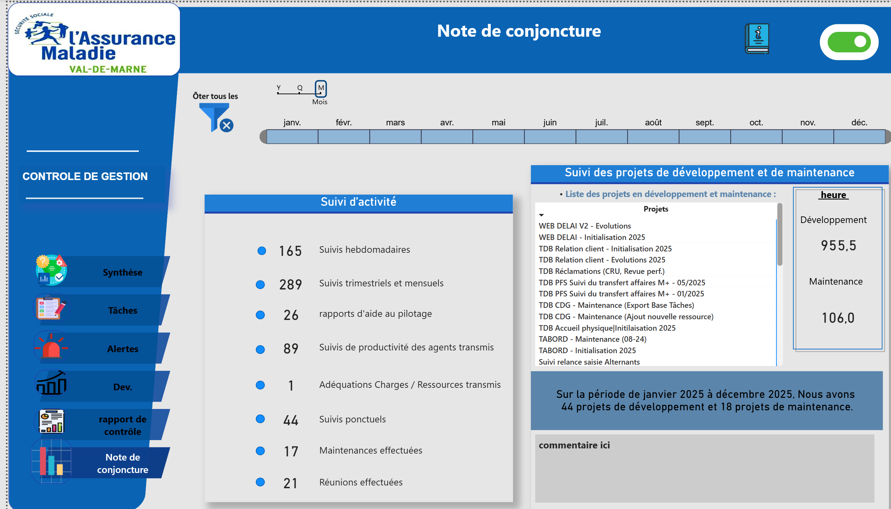

💼A LA DECOUVERTE DU MONDE PROFESSIONNEL
Dans le cadre de ma deuxième année de BUT Science des données, j’ai effectué un stage de quatre mois au sein de la CPAM du Val-de-Marne. Cette expérience s’est prolongée à partir de septembre 2025 par une alternance dans le même service, en tant que chargée de data visualisation et d’automatisation d’outils d’aide à la décision. Cette continuité m’a permis de m’inscrire pleinement dans les missions du service, de gagner en autonomie et de développer une véritable compréhension des enjeux liés à l’exploitation des données dans un contexte professionnel. Au-delà des compétences techniques que j’ai pu mobiliser et renforcer, cette expérience s’inscrit dans un environnement de travail dont les valeurs correspondent pleinement aux miennes. J’évolue au sein d’une équipe particulièrement bienveillante, où la communication, l’entraide et l’encouragement mutuel occupent une place centrale. L’esprit collectif est très présent au quotidien, notamment à travers des temps de partage réguliers qui favorisent la cohésion et la convivialité. Cette dynamique fait écho au slogan de l’organisme, « Agir ensemble, protéger chacun », que j’ai pu observer concrètement dans les relations entre collaborateurs comme dans la manière de conduire les projets. C’est dans ce contexte que j’ai eu l’opportunité de participer à plusieurs projets structurants, dont l’un constitue aujourd’hui une réelle source de fierté pour moi, car je me suis autoformée à un nouvel outil sur lequel j'avais très peu d' expérience, afin de répondre de manière autonome aux besoins du service et de proposer une solution adaptée. j'ai donc développé un tableau de bord Power BI interactif pour le service dans lequel je travaillais : le contrôle de gestion. cet outil permet le suivi de tâches, la visualisation de KPIs et la production de rapports automatisés. Voici ci-dessous un aperçu des différentes vues du tableau.






🌍 CE DONT JE SUIS LE PLUS FIÈRE
Au-delà des compétences techniques et des projets académiques, ce dont je suis le plus fière aujourd’hui est le chemin personnel que j’ai parcouru. Quitter mon pays, ma famille, mes repères et venir étudier à plusieurs milliers de kilomètres n’a pas été une décision facile. C’était un choix guidé par une conviction profonde : celle que l’éducation, le travail et la persévérance peuvent transformer une vie. En arrivant en France, j’ai dû tout reconstruire — apprendre à m’adapter à un nouvel environnement, développer mon autonomie, sortir de ma zone de confort et croire en moi même dans les moments de doute. Chaque étape de mon parcours a été une victoire : comprendre un cours difficile, réussir un projet, prendre la parole en public, m’intégrer dans un nouvel environnement, trouver ma place dans le monde professionnel. Derrière chaque réussite se cachent des efforts, des remises en question, mais surtout une détermination constante à avancer. Cette expérience m’a appris bien plus que des compétences académiques. Elle m’a appris la résilience, l’indépendance, la capacité à m’adapter et à évoluer seule tout en restant fidèle à mes valeurs. Aujourd’hui, lorsque je regarde mon parcours, je ne vois pas seulement une étudiante en science des données : je vois une personne qui a osé partir loin pour construire son avenir. Et c’est cette force intérieure, cette capacité à me dépasser et à continuer à avancer malgré les défis, qui constitue ma plus grande fierté.